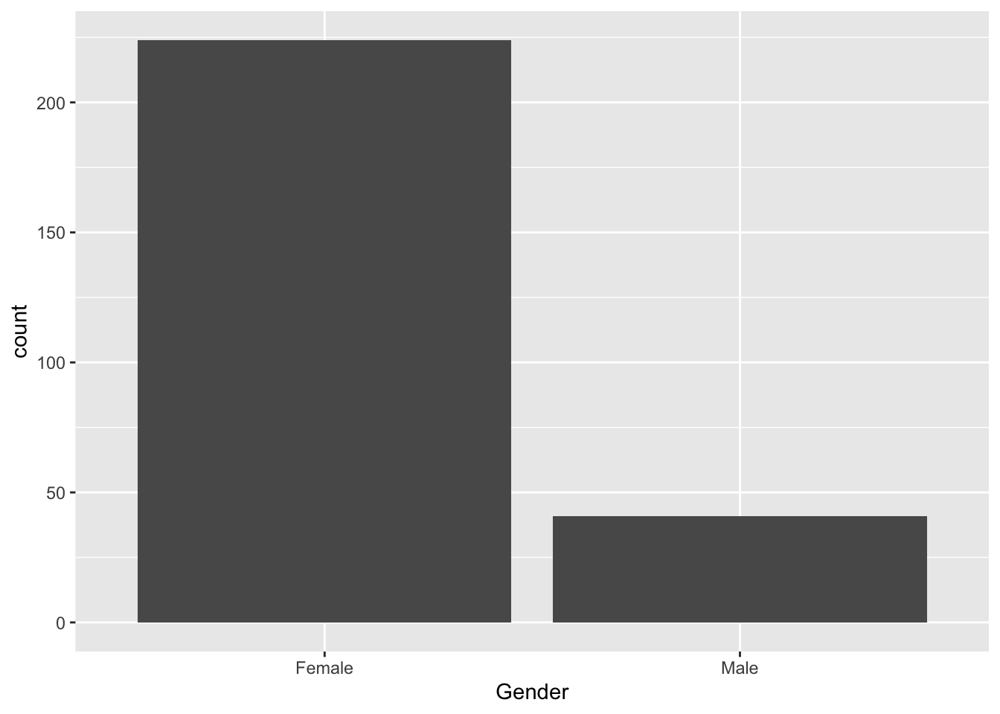

Chapter 21 PCA on survey answers
[TILFØJ: In this chapter we will look at how to conduct Principal Component Analysis (PCA).]
[INDSÆT/FLYT denne tekst, som er sat ind nedenfor: PCA is a tool for looking a correlation structure between variables, and groupings of samples. All through visualizations.
Check out youtube on the subject for an introduction. ]
knitr::include_url("https://youtube.com/embed/NFIkD9-MuTY")[SPØRGSMÅL FRA BODIL: hvad med pakke til at regne modellen ud? bør den ikke også stå på listen]
We use a package called ggbiplot for plotting the PCA model. It is located on github and installed by the follow two code lines:
install.packages('devtools')
devtools::install_github('vqv/ggbiplot')[SPØRGSMÅL FRA BODIL: når du kun skriver ggbiplot behøves, hvorfor står der så en lang liste over pakken nedenunder her også - det forvirrer. Så enten er de unødvendige eller også skal der stå noget mere tekst på dem, så det hele matcher i måden det gøres på?]
library(ggplot2) # lets plot dadta
library(tidyverse)
library(broom)
library(broom.mixed)
library(lme4)
library(ggbiplot)
library(ggpubr) # lets add stats to the plots
library(knitr) # lets make nice tables[MANGLER: også en forklaring på denne pakke under her, hvad bruges den til? og min R siger den ikke findes? Er det fordi du selv er ved at lave den?]
library(data4consumerscience)PCA is a tool for looking a correlation structure between variables, and groupings of samples. All through visualizations.
Check out youtube on the subject for an introduction.
PCA takes numerical data as input, so we use the likert-scales in the form of 1 to 7. Further the yes/no answers are included, and also needs to be changed.
x <- pasta %>%
mutate(Did_you_take_food_from_both_Dish1_and_Dish2 =
Did_you_take_food_from_both_Dish1_and_Dish2 %>% factor %>% as.numeric(),
Did_you_consider_the_proteincontent_of_the_dishes_you_choose =
Did_you_consider_the_proteincontent_of_the_dishes_you_choose %>%
factor() %>% as.numeric()) %>%
mutate_if(is.factor, as.numeric) %>%
filter(Day==1) %>% # the survey part is the same for both days and both stations. That is what we keep.
filter(str_detect(StationName,'leg'))
PCAmdl <- prcomp(x[,c(5:6,8:11)],scale. = T)21.1 Bi-plot
And a plot of the model
ggbiplot(PCAmdl, varname.size = 5) + ylim(c(-4,4)) + xlim(c(-2,5))
What does component 1 (PC1) reflect? What does PC2 reflect?
Lets plot the model and color the samples according to the consumption (of legumes) cutted at the median.
ggbiplot(PCAmdl, groups = factor(x$Consumption>130), ellipse = T,
varname.size = 5) + ylim(c(-4,4)) + xlim(c(-3,5))
21.1.1 Extract the components and run all associations.
We are interested in if any of the likert/survey traits reflected by PCA is correlated with consumption. It is a little complicated, but here goes
scores <- data.frame(Person = x$Person, PCAmdl$x[,1:2]) # take out the first two components.
tbmixed <- pasta %>%
left_join(scores, by = 'Person') %>%
gather(comp,score,PC1:PC2) %>%
group_by(StationName,comp) %>%
do(lmer(data = ., Consumption~score + Day + (1|Person)) %>% tidy(conf.int = T))… Make a table and a plot of the results.
tbmixed %>%
filter(term=='score') %>%
dplyr::select(-effect,-group) %>%
kable(x = .,caption = 'Slopes according to components', digits = 2, format = 'simple')| StationName | comp | term | estimate | std.error | statistic | df | p.value | conf.low | conf.high |
|---|---|---|---|---|---|---|---|---|---|
| Pasta with legumes | PC1 | score | 14.28 | 13.26 | 1.08 | 13 | 0.30 | -14.36 | 42.93 |
| Pasta with legumes | PC2 | score | -19.47 | 17.80 | -1.09 | 13 | 0.29 | -57.91 | 18.98 |
tbmixed %>%
filter(term=='score') %>%
ggplot(data = ., aes(comp,estimate,ymin = conf.low, ymax = conf.high)) +
geom_errorbar(width = 0.1) +geom_point()+
geom_hline(yintercept = 0) +
facet_grid(~StationName) +
theme(legend.position = 'bottom')
Interpret the results.